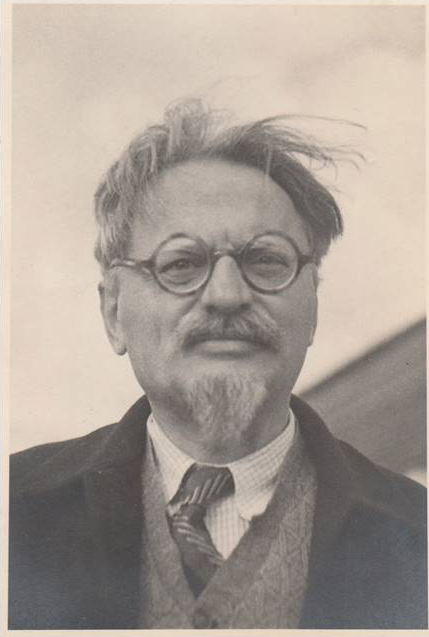
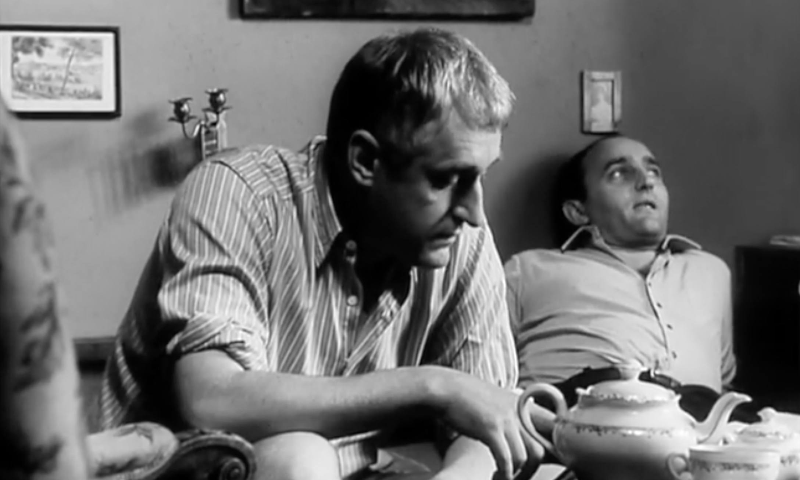
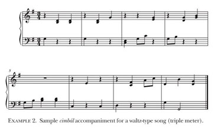

Optimism is the opium of the people!
A healthy atmosphere stinks of stupidity!
Long Live Trotsky!


The Joke
Žert (1967) by Milan Kundera describes how a student's private joke derails his life and tells the stories of his relations grappling with the shifting roles of folk traditions and religion under Communist Czechoslovakia. The novel is told from four perspectives—the joker
Ludvik, his victim
Helena, devout Christian
Kostka, and Moravian patriot and cimbalom band member
Jaroslav.
Many times in recent years women of all kinds have reproached me (because I was unable to reciprocate their feelings) with being conceited. This is nonsense, I'm not in the least conceited, but to be frank, it does pain me to think that not since reaching maturity have I been able to establish a true relationship with a woman, that I have never, as they say, beein in love with a woman. I'm not sure I know the reasons for this failure, whether they lie in some innate emotional defiiency or in my life history; I don't mean to sound pompous, but the truth remains: the image of that lecture hall with a hundred people raising their hands, giving the order to destroy my life, comes back to me again and again. Those hundred people had no idea that things would one day being to change, they counted on my being an outcast for life. Not out of a desire for martyrdom but rather out of the malicious obstinacy characteristic of reflection, I have often composed imaginary variations; I have imagined, for example, what it would have been like if instead of expulsion from the Party the verdict had been hanging by the neck. No matter how I construe it, I can't see them doing anything but raising their hands again, especially if the utility of my hanging had been movingly argued in the opening address. Since then, whenever I make new acquaintances, men or women with the potential of becoming friends or lovers, I project them back into that time, that hall, and ask myself whether they would have raised their hands; no one has ever passed the test: every one of them has raised his hand in the same way my former friends and colleagues (willingly or not, out of conviction or fear) raised theirs.
It's only the Party that's never done me any harm, and I've never It's only the Party that's never done me any harm, and I've never It's only the Party that's never done me any harm, and I've never
to desert it, in fifty-six when there was all that talk about Stalin's to desert it, in fifty-six when there was all that talk about Stalin's to desert it, in fifty-six when there was all that talk about Stalin's
our papers were a pack of lies, nationalized stores didn't work, culture our papers were a pack of lies, nationalized stores didn't work, culture our papers were a pack of lies, nationalized stores didn't work, culture
Union had no freedom, and the worst part of it all was that even Union had no freedom, and the worst part of it all was that even Union had no freedom, and the worst part of it all was that even
Pavel too, and again they all applauded him. Luckily the Party gave the Pavel too, and again they all applauded him. Luckily the Party gave the Pavel too, and again they all applauded him. Luckily the Party gave the
Pavel calmed down too, he didn't want to risk his cushy lectureship in Pavel calmed down too, he didn't want to risk his cushy lectureship in Pavel calmed down too, he didn't want to risk his cushy lectureship in
apathy, mistrust, misgiving, a germ that reproduced in silence, in secret, apathy, mistrust, misgiving, a germ that reproduced in silence, in secret, apathy, mistrust, misgiving, a germ that reproduced in silence, in secret,
than ever, the Party is almost like a living being, I can tell it all my than ever, the Party is almost like a living being, I can tell it all my than ever, the Party is almost like a living being, I can tell it all my
harmed the Party, not even in the days when almost everyone was ready harmed the Party, not even in the days when almost everyone was ready harmed the Party, not even in the days when almost everyone was ready
crimes, and people went wild and began rejecting everything, saying crimes, and people went wild and began rejecting everything, saying crimes, and people went wild and began rejecting everything, saying
was in decline, farms should never have been collectivized, the Soviet was in decline, farms should never have been collectivized, the Soviet was in decline, farms should never have been collectivized, the Soviet
Communists went around talking like that, and at their own meetings, Communists went around talking like that, and at their own meetings, Communists went around talking like that, and at their own meetings,
squawkers a good rap on the knuckles, and when they calmed down squawkers a good rap on the knuckles, and when they calmed down squawkers a good rap on the knuckles, and when they calmed down
Marxism at the university, but something did remain behind, a germ of Marxism at the university, but something did remain behind, a germ of Marxism at the university, but something did remain behind, a germ of
I didn't know how to counter it, I just clung to the Party more tightly I didn't know how to counter it, I just clung to the Party more tightly I didn't know how to counter it, I just clung to the Party more tightly
most intimate thoughts now that I have nothing to say to Pavel, or most intimate thoughts now that I have nothing to say to Pavel, or most intimate thoughts now that I have nothing to say to Pavel, or
Because to live in a world in which no one is forgiven, where all are irredeemable, is the same as living in hell.

Our songs are sung in modes that court orchestras never dreamed of!
The year was 1948.
Everything was upside-down.